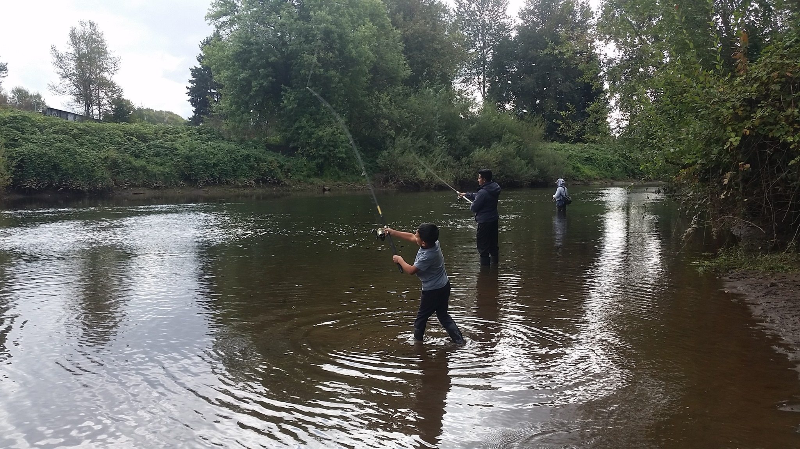

Page 6
The EPA administered cleanup plans for the site and by the end of 2015, 50 percent of PCB contamination in the river bottom was removed: an improvement but nothing close to restoration. The work is still in progress, the question is will their cleanup plan protect those who are most vulnerable? Increased cancer risks threaten the river’s fishermen, especially tribal, low-income and homeless anglers who fish in one of the nation’s biggest Superfund sites in order to put dinner on the table.
